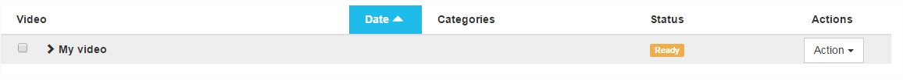

Introduction
The Watcher is capable of listening to some directories specified in plugin's configuration.
Two types of files can be copied in these directories:
Soon after the file has been copied, it will appear in back office catalogue page where all medias are referenced.

Archive files
Archive files (either tar of zip) are used for videos with points of interest. Points of interest can be tags or images.
Two versions of archive files are actually supported.
Version 1
Version 1 can be used to import a package embedding a single video and points of interest of type image or tag.
A valid version 1 archive file must contain a video file and a .session file.
Optionally it can contain a list of several images and a synchro.xml file (deprecated).
.session file
.session file is used to store information about the package. It is written in JSON format and must contain at least:
{
"filename": "video.mp4" // Name of the video file in the package
}
It can contain some optional properties:
{
"date": 1425916390, // The date the video was recorded (in Unix epoch time)
"name": "Example", // The name of the video
"rich-media": true, // true to indicates that video has associated images ("indexes" property must be present)
"indexes": [ // An array specifying a list of points of interest, their own type and associated data
{
"type": "image", // Point of interest type (could be "image" or "tag")
"timecode": 0, // Point of interest time (in ms) from the beginning of the video
"data": { // Point of interest associated data
"filename": "slide_00000.jpeg" // The name of the image file in the archive
}
},
{
"type": "tag", // Point of interest type (must be "image" or "tag")
"timecode": 9500, // Point of interest (in ms) from the beginning of the video
"data": { // Point of interest associated data
"category": "Tag category", // Optional - The name of the category the tag belongs to used as a fallback when no tag name is specified
"tagname": "Very important moment", // Optional - Tag name, if not defined the category will be used as the tag name and if neither category nor tag name are defined it will be replaced by 'TagN' where N is an incremental number
"text": "Tag description" // Optional - Point of interest description
}
},
...
]
}
- at time 0ms, image slide_00000.jpeg will be displayed (slide_00000.jpeg file must be present in the package)
- at time 9500ms a tag named "Very important moment", with description "Tag description", will be displayed and will redirect video at time 9500ms
Nb: All extra properties are kept but won't be used directly by Publish.
synchro.xml file (DEPRECATED)
The use of this file is deprecated.
All points of interest find in this file are added to the points of interest found in .session file.
synchro.xml file is used to map each images to a video timecode. If rich-media property is set to "true" in .session file, synchro.xml file must be present.
It is written in XML format and must respect the following structure:
<?xml version="1.0"?>
<player>
<!-- At time 0ms, image slide_00000.jpeg must be displayed (slide_00000.jpeg must be present in the package) -->
<synchro id="slide_00000.jpeg" timecode="0"/>
<!-- At time 1400ms, image slide_00001.jpeg must be displayed (slide_00001.jpeg must be present in the package) -->
<synchro id="slide_00001.jpeg" timecode="1400"/>
<!-- At time 9500ms, image slide_00002.jpeg must be displayed (slide_00002.jpeg must be present in the package) -->
<synchro id="slide_00002.jpeg" timecode="9500"/>
</player>
List of images
A list of images to synchronize with the video as defined in .session file or synchro.xml file.
Video file
An MP4 file corresponding to the one specified by property filename in .session file.
Version 2
Version 2 can be used to import a package embedding several videos and points of interest of type tag.
Note that with version 2 it is not possible to import points of interest of type image.
A version 2 package with several videos will automatically generate a multi-sources video.
A valid version 2 archive file must contain one of several video files and a info.json file.
info.json file
info.json file is used to store information about the package. It is written in JSON format and must contain at least:
{
"medias": [ // The list of videos present in the package
{
"filename": "video1.mp4" // First video file in the package
},
...
],
}
It can contain some optional properties:
{
"categories": [ // The list of tags categories
{
"label": "Category 1",
"color": "#ff0000"
}
],
"creationTime": "1616789299.639919", // The date the videos were recorded (in Unix epoch time)
"name": "Example", // The name of the multi-sources video
"tags": [ // The list of points of interest of type tag
{
"category": 0, // Optional - Index of the tag's category from the list of categories used as a fallback when no tag name is specified
"name": "Very important moment", // Optional - Tag name, if not defined the category will be used as the tag name and if neither category nor tag name are defined it will be replaced by 'TagN' where N is an incremental number
"timestamp": 3.184865, // Point of interest time (in s) from the beginning of the video
"text": "Tag description" // Optional - Point of interest description
},
...
]
}
- at time 3184ms a tag named "Very important moment", with description "Tag description", will be displayed and will redirect video at time 3184ms
Nb: All extra properties are kept but won't be used directly by Publish.
Video files
At least one MP4 file corresponding to the property medias in info.json file.
mp4 files
If your video doesn't have associated images, a simple mp4 file will be enough.